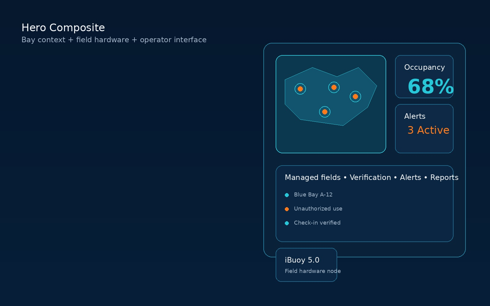
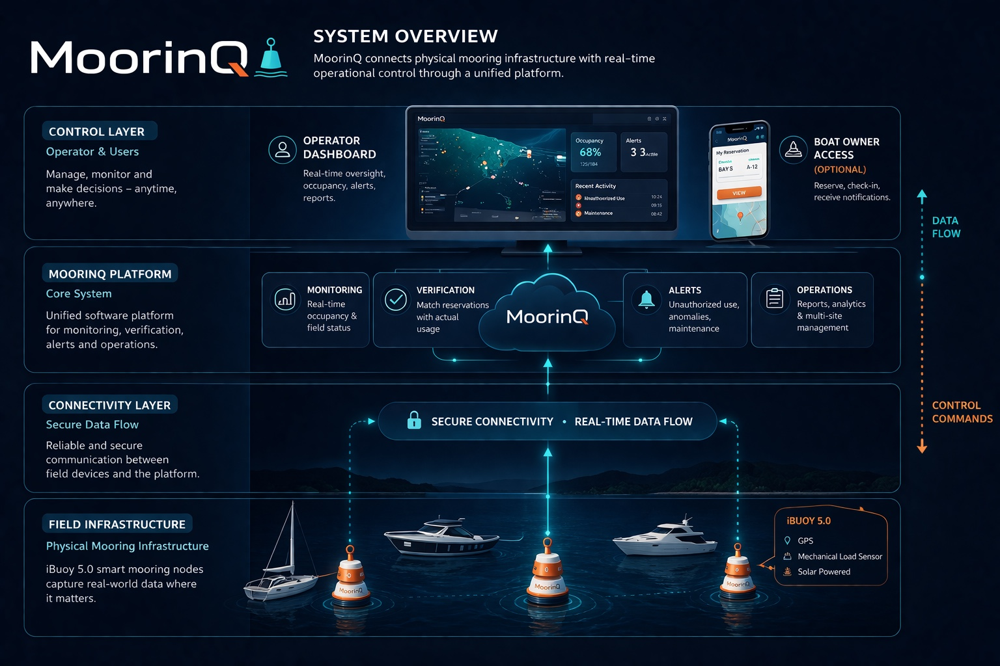
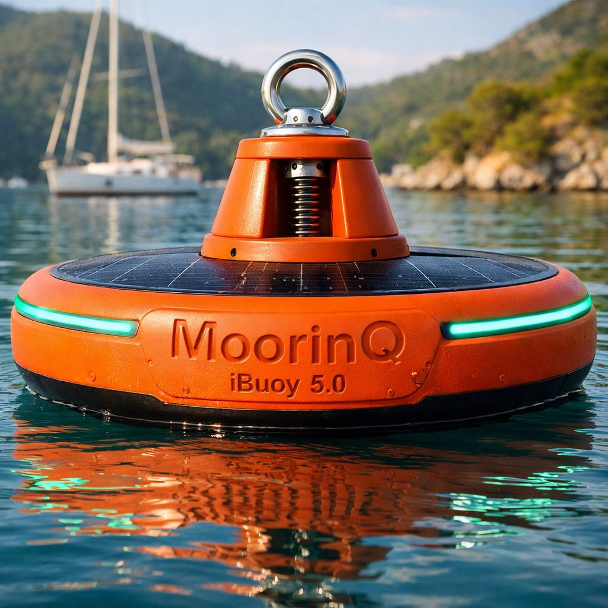
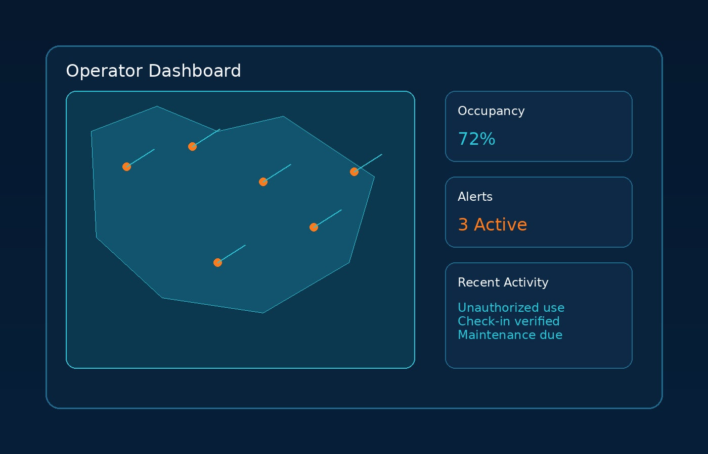
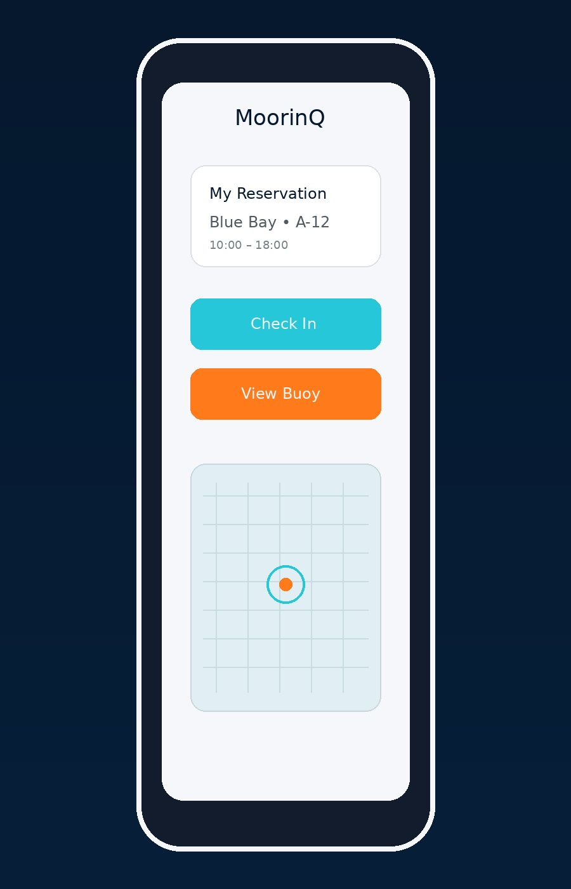

MoorinQ relie les actifs d’amarrage physiques, la vérification des réservations, la visibilité terrain et le contrôle opérationnel dans une seule plateforme unifiée.

Les réservations et l’usage physique réel ne correspondent pas toujours sur le terrain.
Les opérateurs ne voient pas de façon fiable l’état, l’usage et les exceptions en temps réel.
Inspection, intervention et rapprochement manuels consomment temps et ressources.
Une couche opérationnelle unique reliant matériel terrain, flux de données sécurisé, logique de vérification et contrôle opérateur.
Nœuds iBuoy 5.0 et points d’amarrage gérés.
Communication fiable entre le terrain et la plateforme.
Supervision, vérification, alertes et opérations.
Visibilité via tableau de bord et accès optionnel pour plaisanciers.
Conçue pour une présentation web claire au niveau décisionnel, sans exposer les détails d’ingénierie internes.


Matériel marine-grade conçu pour la validation terrain, la supervision temps réel et les opérations d’amarrage gérées.

Utilisé pour réservation, arrivée et check-in, sans repositionner MoorinQ comme application grand public.

MoorinQ s’adresse aux opérateurs et décideurs infrastructure évaluant des opérations d’amarrage vérifiées à l’échelle terrain.